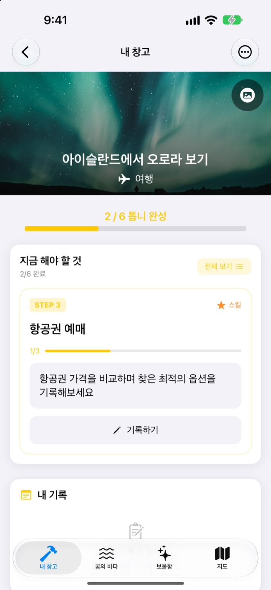
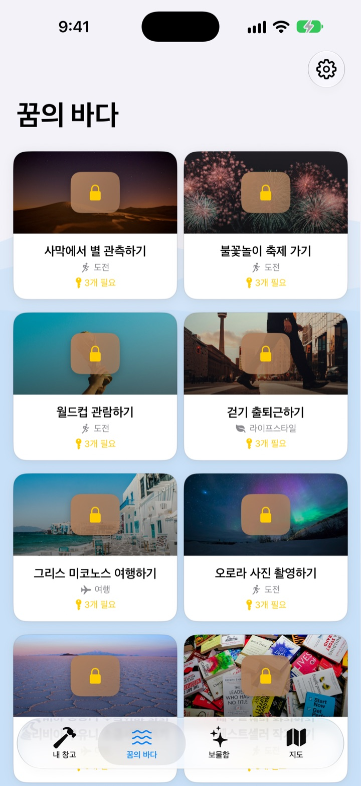
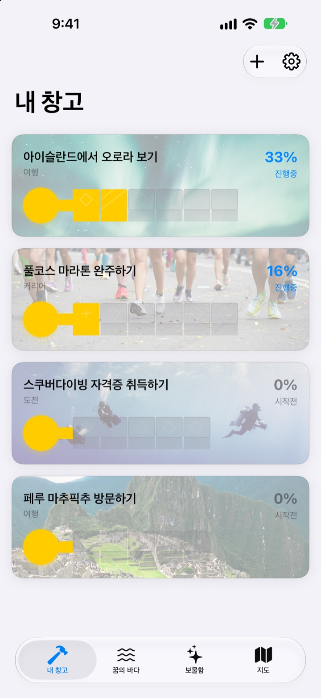
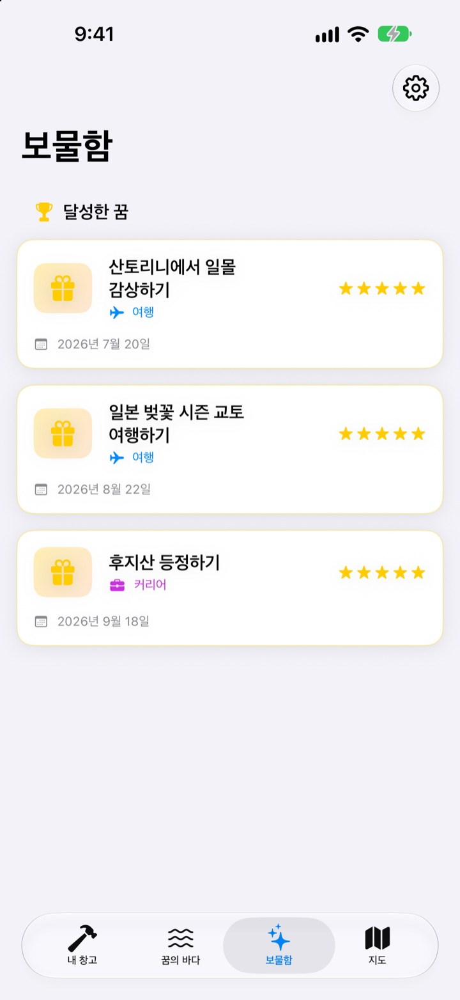

버킷리스트를
적어만 두지 마세요
꿈 하나를 고르면 해낼 수 있는 작은 단계들이 열쇠의 톱니가 돼요. 오늘 할 단계 하나에 답하다 보면, 어느새 꿈 상자가 열려요.
한 번 구입하면 모든 기능을 써요. 구독도 광고도 없어요.

열쇠를 완성해 보세요
아이슬란드 오로라 꿈의 마지막 두 단계가 남았어요. 질문에 한 줄씩 답하고(비워 둬도 돼요) 다음을 누르면 톱니가 채워지고, 다 채우면 상자를 열 수 있어요.
버킷리스트를 적어 두고 잊어버린 적 있나요?
'오로라 보기'는 너무 커서 어디서부터 손대야 할지 모르니, 목록에 적힌 채로 몇 년이 지나갑니다. 꿈을 찾아서는 그 꿈을 시즌 알아보기, 예산 모으기, 항공권 예매처럼 오늘 할 수 있는 크기로 나눠, 지금 할 단계 하나만 보여 줘요.
590여 개의 꿈에서 고르세요
여행, 경험, 성취, 건강, 배움, 관계. 여섯 분야의 꿈이 상자에 담겨 꿈의 바다를 떠다녀요. 마음에 드는 상자를 내 창고로 가져오면 이루기 위한 단계가 이미 나뉘어 있어요.
목록에 없는 꿈은 제목과 분야, 단계를 적어 직접 만들 수 있어요.

톱니 하나씩, 오늘 할 만큼만
내 창고에서는 꿈마다 열쇠가 얼마나 완성됐는지 한눈에 보여요. 지금 해야 할 단계가 맨 위에 있고, 단계마다 준비된 질문에 답하면 톱니 하나가 채워져요.
답과 사진은 내 기록에 쌓이고, 진행 타임라인에서 지나온 길을 다시 볼 수 있어요.

이룬 꿈은 보물함에, 가고 싶은 곳은 지도에
톱니를 다 채우면 상자를 열고, 이룬 꿈은 날짜와 함께 보물함에 쌓여요. 잠시 멈춘 꿈도 그곳에 두었다가 언제든 다시 시작할 수 있어요.
장소가 있는 꿈은 지도에 모여서, 가고 싶은 곳을 한눈에 볼 수 있어요.

시작은 세 단계면 돼요
- 1
꿈을 고릅니다
꿈의 바다에서 상자를 탭하고 내 창고로 가져오기를 누르세요.
- 2
지금 할 단계에 답합니다
맨 위의 단계에서 질문에 하나씩 답하면 톱니가 채워져요.
- 3
상자를 엽니다
톱니를 모두 채우면 열쇠가 완성되고, 꿈 상자를 열 수 있어요.
꿈의 바다에 있는 여섯 분야
- 여행
- 아이슬란드에서 오로라 보기 · 산토리니에서 일몰 감상하기
- 경험
- 스카이다이빙 체험하기 · 패러글라이딩 체험하기
- 성취
- 풀코스 마라톤 완주하기 · 에베레스트 베이스캠프 트레킹하기
- 건강
- 풀업 20개 하기 · 복근 만들기
- 배움
- 영어 유창하게 구사하기 · 프랑스어 유창하게 구사하기
- 관계
- 부모님과 세계여행하기 · 친구들과 제주도 한달 살기
분야마다 백 개 가까운 꿈이 있어요. 나만의 꿈은 내 창고에서 새 꿈 추가하기로 만들어요.
한 번 구입으로 전부
앱 구입
- 590여 개의 꿈과 단계별 질문
- 나만의 꿈 만들기
- 내 기록과 사진, 진행 타임라인
- 보물함과 지도
- 꿈 키우기 모드
- 앞으로의 업데이트
개발자 응원하기 (선택)
- 고마울 때 설정에서 작은 팁을 보낼 수 있어요
- 팁은 기능을 열지 않아요. 보내지 않아도 모든 기능이 그대로예요
한 번씩 보내는 팁이고, 구독이 아니에요.
앱 안에서 따로 결제해야 하는 기능은 없어요. 계정도 광고도 없어요.
자주 묻는 질문
어떻게 시작하나요?
꿈의 바다 탭에서 마음에 드는 상자를 탭하고 내 창고로 가져오기를 누르세요. 내 창고에서 지금 해야 할 단계의 질문에 답하면 톱니가 하나씩 완성돼요. 모든 톱니를 채우면 상자를 열 수 있어요.
나만의 꿈을 추가할 수 있나요?
네. 내 창고에서 새 꿈 추가하기를 누르고 꿈 제목과 분야, 이루기 위한 단계를 적으면 돼요.
꿈을 잠시 멈추거나 다시 시작하려면요?
진행 중인 꿈의 메뉴에서 이 꿈 포기하기를 누르면 보물함의 잠시 멈춘 꿈으로 옮겨져요. 그곳에서 다시 시작을 누르면 내 창고로 돌아오고, 완전 삭제로 지울 수도 있어요.
꿈 키우기 모드는 무엇인가요?
산을 오르는 방식으로 꿈을 관리하는 화면이에요. 설정 > 화면 설정에서 켜고 끌 수 있어요. 단계별 마감일과 비용, 시간 같은 장애물을 프로젝트처럼 관리할 수 있어요.
사진이 안 보여요.
일부 꿈의 배경 사진은 인터넷에서 받아와요. 인터넷에 연결되어 있는지 확인해 주세요. 연결이 없을 때는 기본 그림이 보여요.
새 iPhone으로 기록을 옮길 수 있나요?
기록은 계정이나 동기화 없이 이 기기에만 저장돼요. iCloud 백업이나 컴퓨터 백업으로 새 iPhone을 복원하면 다른 앱 데이터와 함께 옮겨져요.
앱 안에서 따로 결제하는 기능이 있나요?
없어요. 앱을 받으면 모든 기능을 쓸 수 있어요. 설정의 팁은 고마움을 전하고 싶을 때만 보내는 선택이에요.
제 꿈과 기록이 어딘가로 보내지나요?
아니요. 계정이 없고 광고나 분석 도구를 쓰지 않아요. 적은 꿈과 기록, 사진은 이 기기에만 저장돼요.
문의는 어떻게 하나요?
버그 제보, 기능 제안, 그 밖의 무엇이든 편하게 보내 주세요. 앱의 설정에서 피드백 보내기나 인스타그램 DM(@lee25_ios)으로 바로 보낼 수 있어요.
궁금한 점이나 문제가 있으면 leeo@kakao.com로 보내 주세요.